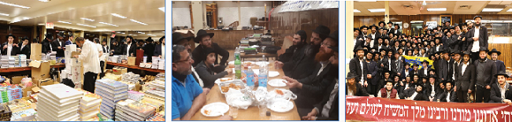

יוסף ישעי’ ברוין
בהפסקת צהריים לפני מנחה, מתקיימת על הבימה “שבע ברכות” להרה”ת שמואל יוסף גרנובטר, הסעודה נחתמת ע”י אמירת 12 הפסוקים ע”י החייל בצ”ה לוי יצחק גרנובטר אחיינו של בעל השמחה.

בהפסקת צהריים לפני מנחה, מתקיימת על הבימה “שבע ברכות” להרה”ת שמואל יוסף גרנובטר, הסעודה נחתמת ע”י אמירת 12 הפסוקים ע”י החייל בצ”ה לוי יצחק גרנובטר אחיינו של בעל השמחה.
לאחר מנחה והדלקת המנורה, יוצאים כולם למבצעים.
יום שני, ל’ כסלו, אדר”ח טבת
לקריה”ת הוציאו ב’ ספרי תורה מיוחדים. את הס”ת של כ”ק אד”ש, והס”ת שנכתב לקבלת פני משיח. לאחר התפילה מתקיימת חגיגת בר מצווה לת’ יחזקאל שי’ שחר בנו של הרה”ת מנחם יעקב שי’ שחר שהשכיל לבחור לחגוג את יומו הגדול במחיצת כ”ק אד”ש.
אחרי מנחה יוצאים כולם למבצעים. היום בערב, בשעה עשר וחצי בערך מתחילה ההתוועדות הקבועה בפינה הצפונית מזרחית. אחד התמימים מספר סיפור ממבצעים. וכך הוא מספר: “נסענו אתמול עם רכב (מיני–ואן) לקווינס. בדרך (בין חנות לחנות) מצאנו בית רפואה שאף פעם לא שמנו לב אליו. נכנסנו. התפצלנו לחבורות חילקנו בינינו את הקומות ויצאנו לדרך. כמובן שנזהרנו שלא יבחינו בנו יותר מידי. אבל חבדניק זה חבדניק. מריחים אותו מקילומטר. רק יצאנו מהמעלית, ניגשת אלינו אחת המזכירות ואומרת שבשום פנים ואופן לא להדליק פה וכו’. חבר שלי לא יודע אנגלית. וזה המזל. הוא אמר לה: “אוקי” ו”סורי”. והמשיך!
“היא צרחה והשתוללה, והזמינה את אנשי הביטחון, אבל עד שהם הגיעו, יהודי בשם גי’קוב בקומה עשירית בבית הרפואה, הספיק להדליק חנוכיה. ולברך את כל הברכות. ולשמוע דבר–תורה. כשהביטחון הגיעו, פשוט הסבירו להם שאנחנו “משמחים” חולים יהודיים.
“אם ככה, אין שום בעיה”. שימחנו עוד כמה זקנות יהודיות שהיו בקומה ויצאנו. נפגשנו כל הקבוצות למטה. בלובי.
“לאף אחד לא הסכימו להדליק בבנין (למרות שזה בית–רפואה יהודי, והמנהל ישראלי) “הם אמרו לנו לא להדליק” - הייתה התשובה של כולם. בזכות חבר שלי שלא יודע אנגלית. יהודי בקומה עשירית הדליק היום. וידליק מחר. יש לרבי את הדרכים שלו להשפיע. רק אל תפריע…
בהתוועדות השתתף הבן של הש”צ ר’ שלמה לייב אברמוביץ’ שסיפר: “בתשמ”ח לערך, השתתפתי בהדלקת חנוכיה פה ב–770, אצל הרבי. הייתי אז ילד קטן ואבי שיחי’ לקח אותי עם אחיותי להדלקה במחיצת הרבי. באמצע שירת ה”נרות הללו”, כשהרבי מסתכל על המנורה במבט חזק, החליטו אחיותי - להגיד שלום לרבי ולהעירו. הוא נראה רציני מאוד. “יותר מידי” הם חשבו. ממחשבה למעשה. ללא שעידכנו את האבא כמובן. “רבי, היי!” צעקו לעבר הרבי בהתלהבות תוך כדי שמנופפות לרבי בידיהם לשלום. האבא כמובן הלבין, והיסה אותם תוך שניה. המזל של האבא שהצעקה נבלעה בשירת הקהל, וכך שלא שמו לב לזה יותר מידי… אבל הרבי. אוי הרבי. כמה שהוא אוהב אותנו, אין לנו מושג. הרבי הזיז את העיניים שלו לעברם והביט עליהם במבט מיוחד ומאיר, תוך כדי שנשאר באותה תנוחה על הסטענדער (מי שמכיר את התנוחה הידועה בחנוכה), ובידו הק’ הזיז את האצבע לשלום. רק הילדות והוא הבחינו. אף אחד מהקהל לא הבחין, אך כיום אפשר לראות את זה בוידאו.
“אבל זה לא הנקודה. אתם מבינים לבד מהי התחושה כשעומדים על משמעות העניין (הרבי עסוק בהשפעה לכל העולמות כולם, ויש לו את מלוא היכולת והזמן להעניק מנוחת הדעת לילדות שחושבות שהוא מידי רציני, וגם זה בלי לפגוע באבא שיראה שהרבי מתאמץ בגללם”!). ההתוועדות הסתיימה לקראת שלוש אחר חצות.
יום שלישי, א טבת, בדר”ח טבת
כיון שהיום זהו היום האחרון להדלקת הנרות, הגיעו קהל רב להשתתף בהדלקת המנורה במנין כ”ק אד”ש.
הלילה מתקיימות מספר התוועדויות בזאל. מעל בימת ההתוועדויות מתקיימת ההתוועדות המסורתית - זו השנה העשירית ברציפות, של קבוצת מקורבים מאור יהודה מארה”ק. הם מתוועדים עם השליח הרב הראל רחימי שי’.
מאוחר יותר, מתקיים סיום הרמב”ם. בין הדברים סיפר המארגן המסור הרב מנחם גערליצקי, שלפני ארבעים שנה, נשלח ע”י כ”ק אד”ש לשליחות בתור בחור עם עוד כתשעה בחורים להקים ישיבה חב”דית בלוס אנג’לס. ישיבה זו התייחדה בכך שלפני כן הייתה כבר ישיבת ליטאית, ובעליה הסכימו להעבירה לרשות ליובאוויטש בתנאי ששמה הקודם ישמר, וכך נוסדה לה ישיבת “אור אלחנן - חב”ד”. “אור אלחנן” נקבע שמה על שם ראש ישיבה בליטא בדור השואה ר’ אלחנן וסרמן הי”ד.
כמה ימים לפני חנוכה באותה שנה נשברה רגלו ל”ע והגיע ל–770. אז כ”ק אד”ש התפלל ביום–חול בזאל הקטן. כמה דקות לפני התפילה נכנס הוא אל הזאל הגדול, כשלפתע הוא מבחין באחד האחים של ר’ יעקב יהודה העכט, יושב וממתין על יד מקומו של כ”ק אד”ש בהתוועדויות, בזאל הגדול. בתחילה הוא לא הבין מדוע הנ”ל יושב ככה, והלא עוד כמה דקות נכנס כ”ק אד”ש למנחה בזאל הקטן. “הרבה זמן להרהר במשמעות הדבר לא היה לי - מספר הרב גערליצקי - כיון שעוד כמה דקות הרבי נכנס למנחה, הזדרזתי לעלות למעלה על מנת לתפוס את מקומי בתפילה. וההמשך ידוע. לאחרי התפילה הודיע הרבי על ההתוועדות. הייתה זו ההתוועדות של “זאת חנוכה תשל”ח”.
קצת לפני חצות הלילה מגיע המד”א הרב יוסף ישעי’ ברוין לזאל, “פארבריינגען”. מתיישבים מאחורי המרפסת, הנקרא גם “הולצברג שול”, ר’ יוסף יצחק קרץ מביא קצת פארבייסן ואחד התמימים מביא משקה, וההתוועדות מתחילה. הרב ברוין פותח את דבריו בביאור מעלתו וסגולתו של היום אליו נכנסנו - “זאת חנוכה”. “ביאורים רבים נאמרו אודות מעלת היום” - מונה הרב ברוין, “והרבי עשה ״צימעס״ גדול מיום זה. אבל בנוסף לכל זה, הרי יום זה הוא ממוצע בין י”ט כסלו לה’ טבת. וכיון שכעת אנו נמצאים בליל יום רביעי ובמילא “קמי שבתא” (ה’ טבת), הרי שמעכשיו מתחיל להיות מורגש ה’ טבת.
“י”ט כסלו הוא יסוד ותחילת כל העניינים, שהרי מאז החלה גילוי פנימיות התורה, וממילא - ההכנה למשיח בצורה הכי גלויה, דבר שבא ליד ביטוי באמירת חסידות בשופי והסברה מלאה, ומאז ממשיך וביתר תוספת ע”י הנשיאים שבכל דור ודור. אבל, ה׳ טבת הוא סיום ותכלית כל הענינים. ה׳ טבת מבטא את המטרה, שבדור השביעי יש את ההמשכה משבעת הרקיעים עד למטה בארץ. בדורנו הרי שהקיטרוג היה יותר גדול ובמילא הניצחון יותר גדול. ״הניצחון שהיה אז בי”ט כסלו”, מטעים הרב ברוין, “היה קיטרוג על תורת החסידות”, מה שאין כן בדורנו, הקיטרוג היה על החידוש של דור השביעי, ועל המאור - נשיא דור השביעי בעצמו, וכפי שהתבטא הרבי בעצמו, “ער מיינט דעם ביינקעל”.
ההתוועדות מתחילה להתחמם והיושבים אומרים לחיים. לאחרי ניגון חסידי מעורר אומר הרב ברוין כך: כשמתבוננים שמים לב, שבכל הסוגיות הכאובות כגון מיהו יהודי, שלימות הארץ, משפט הספרים, מבצע תפילין ועוד, כ”ק אד”ש נכנס להשיב על טענותיהם של הצד שכנגד. דבר מוזר לכאורה, כמה כוחות הרבי משקיע על מנת להתייחס ולבאר את הטעות של הצד שכנגד, ועוד באיזה אופן, באופן של “יצא נפשו בדברו” כפי שניתן לראות בווידאו (“היום הכל מתועד”). בשביל מה? מה זה כל–כך נוגע? וכי ב”מבצע תפילין” שהרבי התייחס לטענות של המתנגדים והפריך את טענותיהם זה הועיל למישהו? לאחר מכן החלו המתנגדים גם לצאת למבצע תפילין?
“הרבי בעצמו התייחס לשאלה הזאת” אומר הרב ברוין וממשיך לאחר אתנחתא קלה. “התשובה לזה שמדברים אודות ענינים אלו, הוא בכדי שלא ירפו ידי המתעסקים בזה”. כלומר, בכדי שחסידי חב”ד ירגישו בנוח להתעסק במבצעיו הק’ של הרבי.
בקשר לזה סיפר הרב ברוין סיפור נוסף: בשנות הכפ”ים היה ראש ישיבה מסוים בארה”ב, שהיה מתנגד לליובאוויטש, וחסיד מסוים שהיה גר לידו הזמינו לאירוע משפחתי, לבר מצווה של בנו. בבר–מצווה חזר הילד על המאמר, ואותו ראש ישיבה ששמע התלהב, וכתוצאה מכך אף למד שיחה של הרבי. כשסיפרו זאת לרבי, הרבי נהנה מאוד, והתבטא שכעת ירדה ההתנגדות מעוד יהודי. ע”כ הסיפור.
“אנ״ש בדעתו התפלאו שהרבי ייחס לזה כל כך חשיבות. מה זה משנה מה ההוא חושב על הרבי? אבל לרבי נוגע שלכל יהודי יהיה קשר עם חסידות ונשיאה. למה? כי “הכל זה הנשיא, והנשיא זה הכל”. כולם הם חלק מהרבי, וה’ טבת גילה את זה, שהכל זה הרבי והרבי זה הכל ואי אפשר להפריד ולחלק ביניהם ח”ו.
לקראת חנוכה תשנ”ב הוציא הרבי מאמר חסידות “להבין ענין נרות חנוכה” בו מגלה, שבגאולה יתגלה איך שכל נברא לא רק קשור להקב”ה, אלא יתירה מזו שהמציאות של כל הנמצאים היא היא אמיתת המצאו, ושאמיתת המציאות דהחוצה עצמו הם המעינות.
“מעין ענין זה ראינו בחנוכה תשמ”ו בעיצומו של משפט הספרים. הרבי ביקש שיוציאו אלבום מפואר עם תמונות מכל הדלקה שתיעשה ע”י חב”ד בכדי להראות ש”ליובאוויטש איז אקטיב” (חב”ד פעילה). מדוע? אמנם אנו לא יודעים דעת עליון, אך אפשר לבאר זאת כך: כל ענינו של הרבי זה להביא את העולם לגאולה, החידוש בגאולה הוא שכולם יתחברו מצד עניינם–הם, עם הגילוי. הרבי לא ביקש שידפיסו ספרי חסידות חדשים (למרות שבאותה תקופה הרבה ספרי חסידות הודפסו), איך מראים שחב”ד פעילה? הרבי ביקש שידפיסו אלבום גשמי ומפואר - שיאו של עולם הזה מבטא את הקב”ה וקיום רצונו יתברך בשמחה בכל מקום ומקום. עיקר הקטרוג היה על החידוש של הרבי לגלות אלקות בעולם הזה, על ההמשכה למטה בארץ, בתחתונים. ולכן, היה חשוב לבטל הקטרוג דוקא על ידי פעולה שכזו. ה’ טבת התגלה התכלית של י”ט כסלו, ש”יכירו כל העמים” שיש מנהיג ואליו וצריכים להתקשר ולהתבטל. ההתוועדות הסתיימה בארבע לפנות בוקר.
בין שאר הדברים, ה״בכן״ של ההתוועדות היה אירגון התוועדות רבתי לכל אנ״ש לערב הבא, מחרת מוצאי זאת חנוכה, לכבוד ארבעים שנה מאז סעודת ההודאה של הרבי, בזאת חנוכה תשל״ח. ר׳ יוסף יצחק קרץ הדפיס מודעה על המקום, שאגב זכה להגהה נמרצת של משתתפי ההתוועדות, ובו צוטט מתוך שיחה של הרבי, שבזאת חנוכה יש להתוועד עם אמירת לחיים באופן של אורות דתהו, אבל שיהי׳ בהגבלות של תיקון. ר׳ יוסף יצחק טען למשתתתפים שצריך כסף וזמן לארגן את ההתוועדות, אבל החברה הרגיעו אותו וטענו שדי בכך שיתלה את המודעות, וזה כבר יעשה את ה׳כלי׳ להתוועדות עצמה. ואכן פורסמו מודעות ב770 שלמחרת תתקיים התוועדות מיוחדת לכל אנ״ש. והשאר כבר היסטוריה - למחרת נודע על שחרורו של ר׳ שלום מרדכי שי׳ רובשקין, ואכן המודעה עשתה את שלה ואלפים הגיעו בהמוניהם לאמירת לחיים מתוך אורות דתהו. .
יום רביעי “זאת חנוכה”, ב’ טבת
בשעה חמש וחצי אחה”צ, שמעתי את השליח ר’ יהודה פרידמן צועק מאחורי: “ספאסיבה רבי!”, מכל הלב, ובקול גדול. לא ייחסתי לכך חשיבות. פתאום מגיע אברך, עם בקבוק משקה גדול ומתחיל לצעוק “דידן נצח” ותוך כדי מתקבצים מולו בחורים אמריקאיים, הוא אומר משהו והם מתחילים לקפוץ בשמחה - “דידן נצח”! חיש קל מתפשטת לה השמועה: “שלום מרדכי רובאשקין שוחרר”. דקותיים חלפו ושירת דידן נצח ב–770 ניצחת על המעגלים. שלוש דקות לאחר מכן, יש רמקולים ובחור שמנגן. בחצי–שעה הקרובה זורם קהל רב ל–770. הרבה בחורים מאהלי תורה ואנ”ש מגיעים ומשתתפים בשמחה. ההרגשה הייתה מחשמלת. עדיין לא מעכלים את הנס. הכל רוקדים, והמשקה נשפך כמים. לפני מעריב עובר הקהל לשיר יחי במנגינת דידן נצח. ההרגש היא שכ”ק אד”ש מתגלה. בתפילה נכחו קהל רב. לאחר התפילה, המשיכו לנגן ולרקוד בעוז וביתר שאת. לקראת השעה תשע הגיעו רבים מהשכונות הסמוכות, ומצטרפים לריקודים וכך עד חצות. ליטאים לצד חסידים, ככולם משתתפים, ולא רק במחיאת כף גרידא. אחד הבחורים מביא דגלי משיח גדולים והרבה מהקהל (ולאו דווקא החבד”י) מנפנפים בהם בעוז.
[אגב, בערך בשעה עשר יצאתי להפוגה קצרה, לאכול משהו, ושמתי לב שמתחת לעזרת נשים, מתקיים השיעור הקבוע לבעלי בתים עם המשפיע הרה”ח יקותיאל פלדמן. כזה מחזה. לא ידעתי איך לאכול את זה אנשים שפשוט מקפידים על השיעור, ואפילו בעיתים שכאלו. כשחזרתי כולם היו כבר עמוק בתוך הריקודים…].
קצת אחרי חצות הביאו כמה יהודים נדיבים ארגזים של משקה בשווי שבע אלף דולר (!) כולם פה מרגישים שמשיח הולך להתגלות. לבנתיים נודע שרובאשקין הולך להגיע ל–770, דבר שמגביר את עוצמת הריקודים. שכחתי לציין, אבל כל עשר דקות בערך מתחלפים הנגנים והתזמורת (כולם רוצים ליטול חלק בזכות הנפלאה).
קצת לפני השעה אחת בלילה, מגיע הנגן החסידי ר’ יוסי כהן, ומתמקם על בימת ההתוועדויות, בשעה זו הרבה מהרוקדים מבוסמים כהוגן, הוא פותח בניגון שקט (לפני ‘יש’ צריך להיות ‘אין’ כידוע), דבר שגורם לכל הקהל לעצור על מקומו, לקחת אתנחתא, ומיד לאחר מכן - הריקודים הגדולים.
בשעה אחת וחצי מודיע ר’ יוסי כהן במיקרופון ש”אנו מקבלים בברכת “ברוכים הבאים” את ר’ שלום מרדכי. כעת הוא יתפלל מעריב, כל הקהל מתבקש לענות אמן, ולא להתקרב יותר מידי, הוא צריך אוויר. פליז. תודה”. כל הקהל נע באינסטינקט לקידמת 770, לחזות בפניו. הצפיפות הייתה כבדה. לאחרי מעריב, נעמד ר’ שלום מרדכי על שולחן ופנה לקהל באמצעות המיקרופון הוא פותח את דבריו במילים האלו: “שלום מרדכי רובאשקין חזר עכשיו הבייתה. תודה לכולם שהתפללו בעבורי, אני רוצה לחזור נקודה מתוך מאמר “פדה בשלום”, לאחר מכן הוא אמר, “זה שהייתי בכלא הוא בגלל סיבה אחת - אמונה וביטחון. יתן ה’ שלאחרי שיש לנו את א’ וב’ (אמונה וביטחון) שיביא לנו את ג’ - הגאולה האמיתית והשלימה. תמשיכו לשמוח עד הגאולה תיכף ומיד”.
התזמורת פצחה שוב במנגינת דידן נצח. עד לשעות הקטנות. בשעה שלוש, ר’ שלום מרדכי ערך סיום הרמב”ם בזאל.
מדהים לראות, יהודי חסידי שכזה, שהדבר שיש לו להגיד אחרי שנים בכלא זה פשוט מאמר, ובמקום לנוח, להקפיד לערוך סיום רמב”ם. אשרי החוסים בביתו של כ”ק אד”ש. אכן כאן מרגישים את ה”אשרי יושבי ביתך, עוד יהללוך סלה”.
רצתי לישון, בדרך הספקתי עוד לראות שמביאים עוד אוכל ושתיה ל–770…
יום חמישי, ג’ טבת
לתפילת שחרית הגיעו מאות מילדי מוסדות החינוך שבשכונה, בקריאת התורה בשחרית כשקראו לר’ שלום מרדכי לעלות לתורה, החל הקהל הגדול לנגן “דידן נצח” גם לאחרי שברך הגומל, המשיכו לנגן את הניגון הנ”ל דקות ארוכות. אחרי התפילה המשיכו את הריקודים מאתמול, הביאו אוכל ומשקה, הריקודים נמשכו כשעה.
כמה דקות לפני השעה שתים עשרה מתקיימת חגיגת בר–מצווה לת’ שלום דובער אוחיון בנו של הרה”ח משה אוחיון מקרית מלאכי, אה”ק.
לאחר הסדרים מתקיים השיעור הקבוע בגאולה ומשיח לעיון. השיעור נמסר ע”י אורח מיוחד שהגיע היום ל–770, הרה”ח הרב נועם וואגנר מדרום אפריקה. נושא השיעור חידושו המיוחד של כ”ק אד”ש בדבר מלכות ויגש.
לאחר מכן מתקיימת בפינה הצפונית מזרחית, בר מצווה לת’ שניאור ישראל שי’ גולדברג, מקרית מלאכי, אה”ק. שהגיע לחגוג את יומו הגדול במחיצת כ”ק אד”ש.
בהמשך נפתחות ב–770 התוועדויות רבות.
יום שישי, ד’ טבת
לאחר התפילה עוד הספקתי לראות ארבע בר–מצוות, שלושה בשולחן שע”י ה”ארון קודש”. ואחד בשולחן מאחורי מקומו של כ”ק אד”ש.
הרבה במבצעים שלנו בירכו אותנו על רובאשקין. כולם מרגישים חלק מהעניין.
כשנכנסתי ל–770 לקבלת שבת, שמתי לב אל השלט התלוי בקיר המערבי - “זה היום עשה הוי’ נגילה ונשמחה בו”, בקשר עם יום הבהיר אליו נכנסנו, ה’ טבת - “דידן נצח”.
ניגנו לכה דודי במנגינת “דידן נצח” כש”בלא תבושי” עוברים למנגינה הקבועה ולאחריה שירת יחי מול מקומו של כ”ק אד”ש. הקהל כולו שר בשמחה עצומה.
לאחר התפילה נפתחות התוועדויות רבות ב–770. בביאור מעלת היום וההודאה לה’.
יום שבת קודש, יום הבהיר ה’ טבת
התפילה היתה באוירת “דידן נצח”, מיד לאחר התפילה החלו להכין את הזאל להתוועדות כ”ק אד”ש. הכל מוכנים. הגיעו קהל רב. אחת עשרים וחמש מתחילים לנגן יחי במנגינת “דידן נצח”. כולנו מחכים לחזות ולשמוע. בעת שכזו. אין יותר מתאים משעה שכזו. בשלוש וחצי נפתחות הרבה התוועדויות, שנמשכו עד מוצאי שבת.
תחושת ה”מזל טוב”, ו”חשף” מלכנו את “זרוע קודשו” והראה שהנהגתו חובקת את כלל עם ישראל בגלוי. “דידן נצח תשע”ח!” כל יהודי אשר בשם ישראל יכונה ראה אשר בימים האחרונים “דידן נצח”. “דידן - דהנשיא - נצח”. ראו שהנשיא הוא הכל, והכל הוא הנשיא.
מוצאי שבת–קודש
בשעה תשע וחצי התקיימה התוועדות ב–770 באירגון הגבאים. בין הדוברים היו חברי הבד”צ דהשכונה: הרב אהרן יעקב שוויי והרב יוסף ישעי’ ברוין, ר’ יוסף יצחק ריבקין פתח את ההתוועדות בחזרת מאמר של הרבי. השליח במלבורן אוסטרליה ר’ חיים צבי גרונר, ר’ יוסף זאייאנץ, והרב צבי טלזנר, רב קהלת ליובאוויטש במלבורן אוסטרליה. בסוף ההתועדות המנחה הרב שלום יעקב שי’ חזן הזמין את ר’ שלום מרדכי רובאשקין לדבר תוך שמקדים: נמצא איתנו יהודי שגילגלו לידו זכות נפלאה (וכידוע שמגלגלין זכות לידי זכאי), לקשר עשרות אלפי יהודים מכל העולם אל כ”ק אד”ש, שיכירו ש–770 הוא מקום שממנו יוצאה אורה לכל העולם כולו וכו’. ר’ שלום מרדכי פתח במילים “א ציבעלע זאל פון דיר ווערן אבער חסידות זאלסטו חזר’ן” [= תחזור חסידות ואפילו שתרגיש גאווה מלא קליפות כבצל]. לאחר מכן הוזמן העו”ד שלו ר’ חיים יוסף אפפעל, והוא אמר: “תמיד היו לי רגשות חמים לליובאוויטש, ועכשיו יש לי הרבה יותר ושלא בערך, לאחרי שהכרתי את ר’ שלום מרדכי”.
בשעה אחת בלילה, הסתיימו הנאומים והחלו ריקודים של דידן נצח שנמשכו שעה ארוכה. התוועדויות פרטיות עד אור הבוקר כפשוטו ממש.
• • •
אבא, זהו סיכומו של שבוע ב–770. היום יותר מתמיד חשים את התגלותו המיידית של כ”ק אד”ש. ולא רק החבדניקי”ם. ר’ שלום מרדכי סיפר שב”בורו פארק” אמרו לו היום שהריקודים האלו והשמחה העצומה שברחבי העולם זה טעימה מהריקודים בביאתו הקרובה של משיח. כאלו מילים. כולם בכל העולם שרים “דידן נצח”, הנשמה של כולם צועקת - “דידן - דהנשיא - נצח”. ה”שהחיינו” המתפרץ נוכח גודל הרגע והשעה, מבהירים לכולנו שללא עיכוב מיותר נכנסים כולנו אל הגאולה. ידיעה ברורה שגורמת אצל כולנו להתכונן לרגע המיוחל מתוך שמחה מיוחדת.
ותיכף ומיד נפגשים כולנו - עם כ”ק אד”ש בגאולה. בימים זכאין שכאלו, אכן ניתן לחוש מעין ודוגמת השמחה עת נעמוד לפני כ”ק אדמו”ר מלך המשיח שליט”א בגאולה האמיתית והשלימה - ונכריז לפניו בביטול עצום:
יחי אדוננו מורנו ורבינו
מלך המשיח לעולם ועד!
דוידי, ארצות החיים - 770 - בית משיח